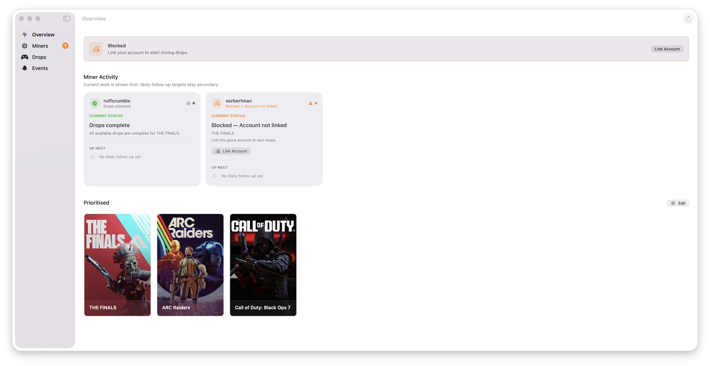
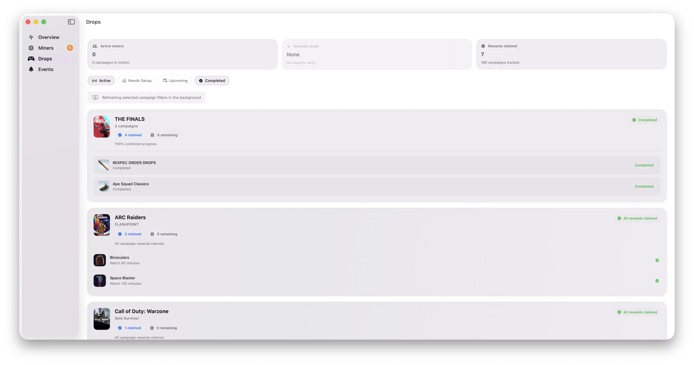
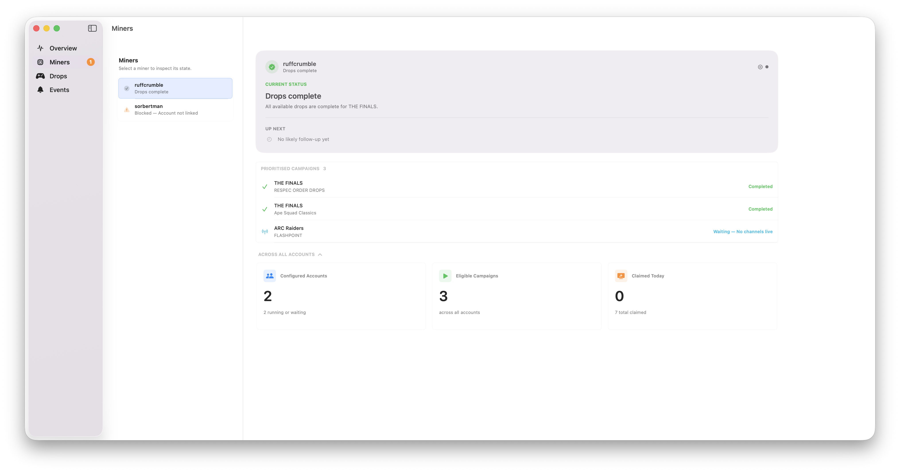

Mine Twitch Drops.
On Autopilot.
Automated farming built for macOS. Monitor multiple accounts natively without juggling massive, CPU-heavy browser automation.

Everything visible.
Nothing complicated.
A dashboard that matches the way you run miners without turning your desktop into a maze of browser tabs.
True Multi-Account
Run separate miners for each of your Twitch accounts simultaneously. Monitor all campaigns, drops progress, and active streams from one unified control room.
Auto-Claim
Automatically grabs rewards the second a drop hits 100%. No manual clicking required.
Native Engine
Built entirely with Swift & SwiftUI. Fast, polished, and lightweight.
Local WebUI
Check your drops from the couch. The built-in local web server lets you monitor progress and manage miners remotely from your phone or any device on your local network.
Discord Tracking
Keep an eye on drops when away from home using SwiftBot.


No browser farm
to babysit.
SwiftMiner uses native app services instead of heavy browser automation. Your setup stays cleaner, uses a fraction of the CPU and memory, and is significantly easier to monitor without managing endless chrome profiles.
Ready for the next drop.
Join thousands of users optimizing their Twitch drops. Download the latest signed and notarized release directly from GitHub.
Get SwiftMinerRequires macOS 13.0 or later. Auto-updates via Sparkle.